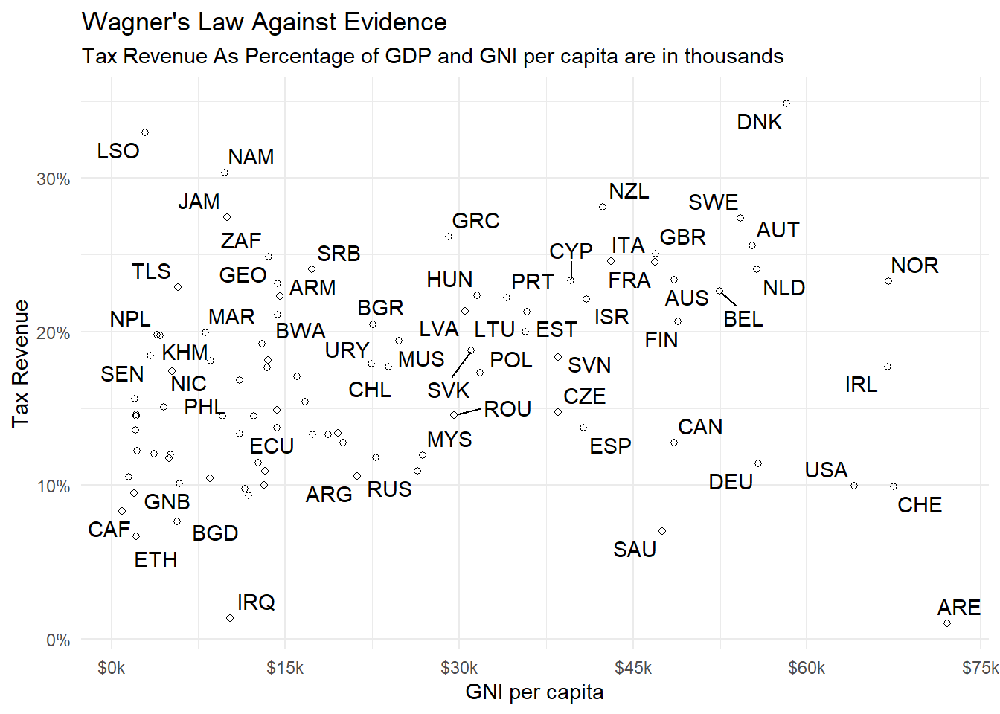
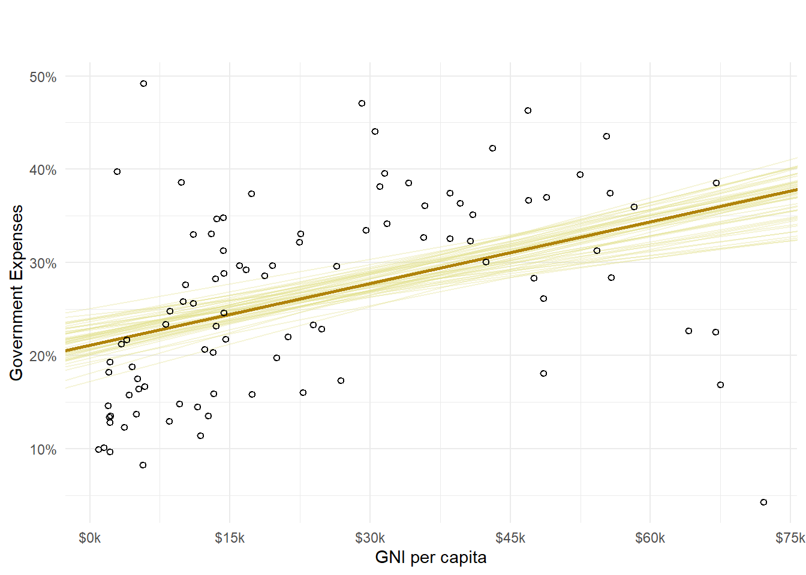
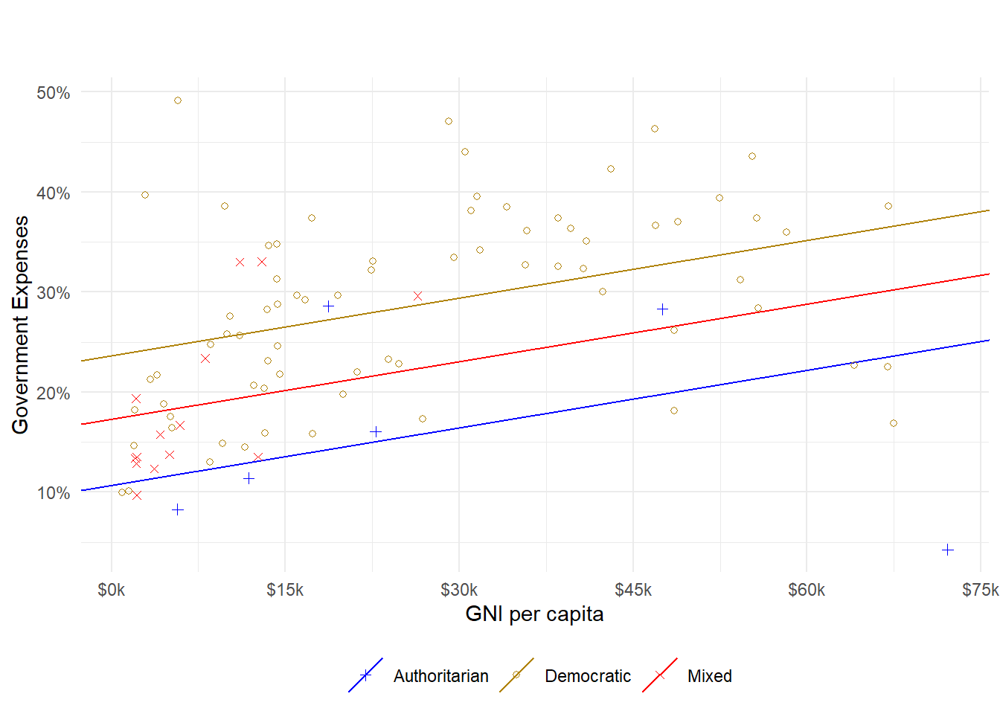

Regression Modeling To Explore The Relationship Between Government Size And Economic Development
Author
Elías José Mantilla Ibarra
Wagner’s Law & On the Importance of Politics
Political institutions — constrains and incentives — determine the final outcome of collective decisions which, in the realm of economic policy for instance, matter to explain economic outcomes. The New Political Economics focus on the determination of equilibrium policy outcomes, such as the inflation rate, whereas neoclassical economics would take those variables as endogenously given. Shortcomings of traditional models in economics have inspired waves of professionals entering the field to pay attention and explicitly account for the role of politics.
Wagner’s Law is one example that illustrates how merely economic indicators fail to fully account for the variability observed in the real world. Wagner’s Law, named after the originator of the thesis, states that as nations develop and incomes rise, the public sector will grow in relative importance. In their introductory textbook, authors Leopoldo Fergusson and Pablo Querubín (2018), use this example as a leading proposition for the argument in favor of studying and paying attention to politics.
In order to understand the validity of Wagner’s Law in the world, data can be collected on national income and government size as measured by government outlays and tax income. The two following graphics are reproduced from the book. Both consist of scatter plots that relate the two measure of government size to national income. Both series of government expenses and tax revenue are expressed as percentage of GDP. National Income is the purchasing power parity adjusted Gross National Income per capita in 2017 USD dollars.
Code
# Import all necessary librarieslibrary(WDI)library(tidyverse)library(rstanarm)library(scales)library(readxl)library(reshape2)library(forcats)library(gtsummary)# Read in data through the WDI APIdf <-WDI(country ="all",indicator =c("NY.GNP.PCAP.PP.KD", "GC.XPN.TOTL.GD.ZS","GC.TAX.TOTL.GD.ZS", "SP.POP.TOTL"),start =2019,end =2019,cache =NULL,latest =NULL)# Specify location of data set# select directory for file weo.txtsubdir <-"/blog/contents/wagner_law/data/polity.xlsx"cuwdir <- here::here()file_polity <-paste0(cuwdir, subdir)# Read in data from Polity V projectpolity <- file_polity %>%read_excel()# set SEEDSEED =1603# Clean up resulting query df <- df %>%rename("rgnppc"="NY.GNP.PCAP.PP.KD","govexp"="GC.XPN.TOTL.GD.ZS","govtax"="GC.TAX.TOTL.GD.ZS", "pop"="SP.POP.TOTL") %>%filter(!iso3c %in%c("AFE", "CEB", "EAP", "TEA", "EAS", "EMU", "ECA", "TEC", "ECS", "EUU", "IBD", "IBT", "LTE", "LAC", "LCN", "TLA", "LMY", "MHL", "MIC", "NAC","OED", "PSS", "PST", "WLD") &!iso2c %in%c("XD", "XT")& pop >1e6&!country =="Croatia") %>%# The figure for this country seems off, might check in the futureselect(-c(iso2c, year)) %>%left_join(polity %>%select(c(country, polity2)), by ="country") %>%drop_na()
The resulting graphics show that there is much variability left unexplained by incomes only. Countries with less national income per capita such as Ecuador or Brazil show similar levels of government spending as the US or Sweden. The case is very similar for the levels of tax income. This is to be expected as there are many factors influencing government expenditures. A reason behind the wide variability in levels of government spending is that some countries may finance larger social programs than others. This sorts of decisions are taken after a process of deliberation that involve the coming together of heterogeneous interests.
Code
# Scatter plot of government expenses vs national incomeggplot(df, aes(rgnppc, govexp)) +geom_point(shape=1, stroke=0.5) + ggrepel::geom_text_repel(aes(label = iso3c), max.overlaps =6) +scale_x_continuous(labels =label_dollar(scale =1/1000, suffix ="k"),breaks =seq(0, 80000, 15000)) +scale_y_continuous(labels =label_comma(suffix ='%')) +labs(title ="Wagner's Law Against Evidence",subtitle ="Government Expenses As Percentage of GDP and GNI per capita are in thousands",y ="Government Expenses",x ="GNI per capita" ) +theme_minimal()
Figure 1: Government Expenses vs National Income
Code
# Scatter plot of tax revenue vs national incomeggplot(df, aes(rgnppc, govtax)) +geom_point(shape=1, stroke=0.5) + ggrepel::geom_text_repel(aes(label = iso3c), max.overlaps =6) +scale_x_continuous(labels =label_dollar(scale =1/1000, suffix ="k"),breaks =seq(0, 80000, 15000)) +scale_y_continuous(labels =label_comma(suffix ='%')) +labs(title ="Wagner's Law Against Evidence",subtitle ="Tax Revenue As Percentage of GDP and GNI per capita are in thousands",y ="Tax Revenue",x ="GNI per capita" ) +theme_minimal()

Figure 2: Tax Revenue vs National Income
A Linear Model for the Relation Between Government Size And Economic Development
Linear regression is a technology useful for a variety of purposes. It can be used to make predictions, for instance, of the values that a variable of interest will take given a series of conditioning variables. It can be used to make comparison between individuals or entities. It can be used to establish a causal relation whereby we assign an effect in the outcome variable to a particular predictor. This is achieved through the estimation of the parameters of a model that represents a relation among variables. From this model, we obtain a conditional probability distribution for a variable of interest. In general, the estimated coefficients of such a model are called effects but ,as it is explained by Gelman et al (2020) in Regression and Other Stories, that terminology is misleading if one does not pay careful attention to the underlying assumptions.
In the present blog post, I do not assume anything about the data generating process and, instead, focus on understanding and characterizing the data collected, as is. Therefore, I will not use the terminology of effects to describe and interpret the regression model’s coefficients but I will make comparison between the countries. Further, it must be mentioned that for that terminology to make sense I would have to convince you, dear reader, that an intervention or interference separated two distinguishable groups: control and treatment. This intervention exists and matters regarding the data generating process. In this particular case, we can only account for observational patterns.
It is of interest to understand, empirically, the relation between government expenses and national income. First, it is useful to explore the variable of interest in isolation and then move to bivariate relationship. The empirical cumulative distribution function, ECDF, is plotted in Figure 3. The average level of government expenses sits around 26%. More than three quarters of countries’ governments spend less than 35% of GDP, thus leaving about 20 countries with government expenses over that level of GDP. As can be seen in Figure 1, countries whose government expenses are over that level span across the full spectrum in terms of national income, which suggest that, indeed, the variation in this variable of interest cannot be explained by national income alone. Nevertheless, a linear regression model is always a useful starting point to characterize the relation between two variables.
Code
# `ecdf` function calculate vector for the empirical cumulative distributionecdf <-function(data) { n =length(data) ecdf_ =tibble(x =sort(data),y =seq(1, n) / n )return(ecdf_)}# Plot the ECDFggplot(data =ecdf(df %>%pull(govexp)),aes(x, y)) +geom_point() +scale_y_continuous(labels =label_percent()) +theme_minimal() +labs(x ="Government Expenses as Percentage of GDP",y ="" ) +theme(panel.grid.major.y =element_line(colour ='black', linetype ="dotted") )
Figure 3: ECDF: Government Expenditures as Percentage of GDP
As recommended by Gelman et al (2020), we start with a simple model that includes only one predictor. Namely, that of national income, the predictor of interest. We standardize national income by transforming it to its z-score. This transformation is justified by the wide range of the original scale and, also, it makes interpretation easier. The computational engine we are going to use is from the rstanarm package with null priors to obtain the maximum likelihood estimates.
Code
# Re-scale using z-scoredf <- df %>%mutate(zrgnppc = (rgnppc -mean(rgnppc)) /sd(rgnppc))# Fit simple linear regression modelfit.1<-stan_glm( govexp ~ zrgnppc,data = df,refresh =0,prior =NULL, prior_intercept =NULL,prior_aux =NULL )# Display model resultsfit.1%>%tbl_regression(intercept=TRUE,label =list(`(Intercept)`~"Baseline", zrgnppc ~"GNI per capita, PPP (z-score)") )
Characteristic
Beta
95% CI1
Baseline
26
24, 28
GNI per capita, PPP (z-score)
4.4
2.3, 6.3
1 CI = Credible Interval
From the fitted model we know that the government expenditure level of the country with average national income is 26.14%. The point estimate of the difference in expenditure level for a country whose national income is one standard deviation away is 4.36 percentage points in either direction, and it is 8.72 percentage points for a country that sits two standard deviations away. This is useful, as it argues in favor of a positive relation between the variable of interest, government expenses, and the main predictor, national income. Note, however, that there is strong predictive uncertainty in that the error standard deviation, how far off predictions are likely to be from the true value, is 9.44. This, of course, complicates inference but it is also evidence that national income cannot fully account for the variability observed in the level of government expenditures in this cross-section of countries.
The same model was fitted again without the standardization and plotted in Figure 4. From a visual inspection, we observe that the model does not fit the data perfectly. The cloud of points allows us to hypothesize that a more accurate relation would be polynomial as the points form a U-shape that increases but eventually stagnates and declines. For national incomes below $30,000 USD, the relation appears positive and stronger than suggested by the fitted model. Beyond the point, the relation flattens out and even becomes negative. This latter trend is led by countries such as Canada, the USA, Ireland and the United Arab Emirates.
Posterior simulations offer us parameter sets that are used to plot more lines around the fitted model so as to represent the uncertainty of this linear predictor.
Code
# Fit simple linear regression model in original scalefit.2<-stan_glm( govexp ~ rgnppc,data = df,refresh =0,seed = SEED,prior =NULL, prior_intercept =NULL,prior_aux =NULL )# Collect simulationssims.2<-as_tibble(fit.2)# Plot fitted model with uncertainty - other parameter sets resulting from simulationsdf %>%ggplot(aes(rgnppc, govexp)) +geom_abline(aes(slope = rgnppc, intercept =`(Intercept)`),data = sims.2%>%slice_sample(n =50),color ="#e0df87",alpha =0.33,linetype ="solid" ) +geom_abline(slope =coef(fit.2)[["rgnppc"]],intercept =coef(fit.2)[["(Intercept)"]],linewidth =0.98,color ="#b0830b" ) +geom_point(shape=1, fill ='black', stroke =0.75) +scale_x_continuous(labels =label_dollar(scale =1/1000, suffix ="k"),breaks =seq(0, 80000, 15000)) +scale_y_continuous(labels =label_comma(suffix ='%')) +labs(title ="",subtitle ="",y ="Government Expenses",x ="GNI per capita" ) +theme_minimal()

Figure 4: Linear Model for Government Expenses vs National Income
Controlling for Political Regime Type
Given the initial comments on the importance of politics, an extension to the current model may consist of the inclusion of a political variable. More specifically, we include a proxy for the regime type. The data set comes from the Polity IV project whose aim to unveil the political regimes and structures across the globe. The proxy for the regime type used in the post if the discretized polity score. The polity score exists in the range from -10 to 10 where higher scores indicate a more democratic regime. The score is made discrete by means of binning. Scores of less than -5 will be considered authoritarian, score greater than 5 will be considered democratic and those in the middle range will be considered “mixed”. This choice is arbitrary and its sole purpose is to illustrate a simple relationship clearly.
A first impression is that there is a high degree of uncertainty around the point estimates given the wide credible intervals. There are two reasons for this. First, it must be noted that a linear model may not be an appropriate choice to represent the relationship between these variables. Second, this data set is imbalanced with almost 78% of the countries in the category of democratic regime, 15% in the category of mixed regime, and close to 6% in the category of authoritarian.
Although the task of statistical inference is made hard due to the uncertainty in the parameters, it is still useful to make comparisons given the estimates of the model. If, for instance, we accept the proposed scheme for discretization, we can compare the average levels of government expenditure between the countries in the three categories. The difference in government expenditure is, on average, 13.02% percentage points with 65% chances that is it 3.62 percentage points away and 95% chances that is 7.25 percentage points away. This comparison can be seen graphically in Figure 5. It also illustrates its limitations including potential varying marginal effects and different sample size for each category.
Finally, Figure 6 better illustrates the uncertainty in the parameters’ point estimates. Even tough there is a difference between each of the categories, the degree of uncertainty does not allow us to make any definitive claims about their differences.
Improvements are foreshadowed in the inclusion of more and better controls. Although this results are disappointing, it is a relief to know that the variation observed in the levels of government expenditures needs to be attributed to more factors other than national income and better variables other than the rather simple and arbitrary one used for this work.
Code
# Fit linear saturated model with national income in original scale fit.4<-stan_glm( govexp ~ rgnppc + dem + mix,data = df,refresh =0,seed = SEED,prior =NULL, prior_intercept =NULL,prior_aux =NULL )# Obtain the parameters for each of the lines - one per grouplines.4<-tribble(~reg, ~slope, ~intercept,"aut", coef(fit.4)[["rgnppc"]], coef(fit.4)[["(Intercept)"]],"mix", coef(fit.4)[["rgnppc"]], coef(fit.4)[["(Intercept)"]] +coef(fit.4)[["mix"]],"dem", coef(fit.4)[["rgnppc"]], coef(fit.4)[["(Intercept)"]] +coef(fit.4)[["dem"]])# Plot fitted models for each category/groupdf %>%ggplot(aes(rgnppc, govexp)) +geom_abline(aes(slope = slope, intercept = intercept, color = reg),data = lines.4 ) +geom_point(aes(color = reg, shape=reg)) +scale_x_continuous(labels =label_dollar(scale =1/1000, suffix ="k"),breaks =seq(0, 80000, 15000)) +scale_y_continuous(labels =label_comma(suffix ='%')) +scale_color_manual(values =c("blue", "#b0830b", "red"),labels =c("Authoritarian", "Democratic", "Mixed")) +scale_shape_manual(values =c(3, 1, 4),labels =c("Authoritarian", "Democratic", "Mixed")) +scale_size_manual(values =c(2, 1, 2)) +labs(title ="",subtitle ="",y ="Government Expenses",x ="GNI per capita" ) +theme_minimal() +theme(legend.position ="bottom",legend.title =element_blank(), )

Figure 5: Saturated Linear Model for Government Expenses vs National Income
Figure 6: Average Government Expenses Point Estimates and Uncertainty
As stated previously, regression is most often useful to make comparison. A step further would be to include the polity score as is, so as to allow for more variability coming from the political variable, as well as adding more controls. Diagnostics can be used to assess predictive accuracy and whether key linear regression assumption were violated which may negatively impact predictions. That is out the scope of the blog post whose aim was to use regression to make comparison between countries for a variable of interest.
In next posts, I will explore nonlinear models; hierarchical models to explore year-on-year variability; posterior predictive checks to better assess model fit and the fitting procedure.
References
Fergusson, L. and Querubín, P., 2018. Economía política de la política económica. Universidad de los Andes.
Gelman, A., Hill, J. and Vehtari, A., 2020. Regression and other stories. Cambridge University Press.